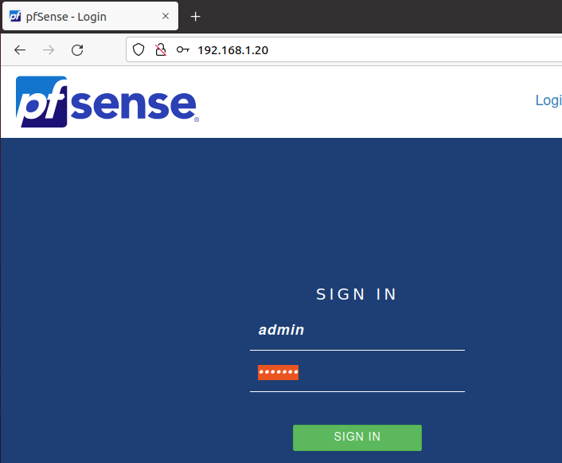

Firewall i servei DNS:
Programari utilitzat:
La màquina Firewall tindrà instal·lat el software de codi obert Pfsense, amb aquest gestionarem les normes d’entrada i sortida de paquets per tenir controlat que pot i que no pot entrar o sortir de la màquina.
Aquest programari també ens permet configurar un servidor DNS, d’aquesta forma podriem fer que una màquina virtual client utilitzant la màquina del firewall com a servidor DNS pugui arribar al moodle del nostre institut resolent el nom de domini en comptes de la IP.
Configuració d’interfícies:
Xarxa WAN - Adaptador Pont: 172.22.9.250/24
Xarxa LAN - Adaptador xarxa interna: 192.168.1.20/24
Administració gràfica del servei amb Pfsense:

Configuració DNS amb Pfsense:
Hem implementat una redirecció DNS amb el programari Pfsense per així fer que tots els ordinadors que obtinguin la IP 192.168.1.20 com a servidor DNS tinguin la possibilitat de redirigir les peticions d’adreces que no tingui el nostre servidor ( Totes menys l’adreça del nostre servidor Moodle) als servidors de Cloudflare 1.1.1.1, 1.0.0.1 .
És molt important el ordre al aplicar les normes del Firewall ja que pot afectar en el rendiment d’aquest, com podem veure en aquesta captura nosaltres hem deixat la norma per defecte d’acceptar qualsevol petició LAN IPv4 i IPv6 al final per no interferir en les opcions més restrictives com la del DNS.
Tenim com a mode de DNS que primer intenti resoldre la query amb el nostre servidor i si no és possible que ho resolgui amb els servidors de CloudFlare, d’aquesta forma quan registrem el nostre nom de domini a aquest DNS ho resoldrà correctament.
Aquí podem veure que la petició és resol correctament enviant la petició als servidors de Cloudflare.
Normes del Firewall:
És important al configurar el Firewall que no deixem les normes per defecte, aquestes deixen que qualsevol cosa que no estigui permesa entri igualment. En el nostre cas hem configurat la normativa per a rebutjar totes les peticions que entrin amb IPv4 i directament bloquejar totes les peticions IPv6 ja que no utilitzarem aquest protocol és millor tenir bloquejat l’entrada de les peticions.